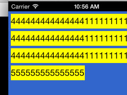
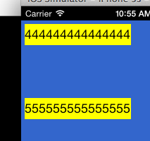
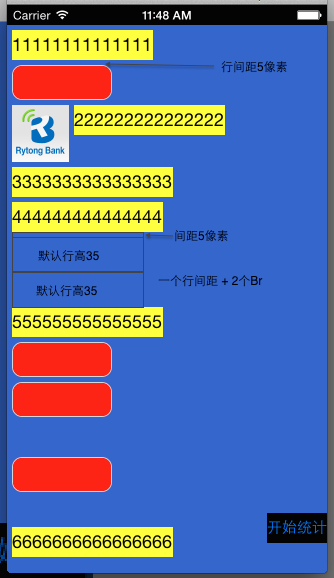

此规则适用于td,div,body.
block元素也称为块元素,通常他们是独占一行的.其他元素遇到block元素需要换行.
br元素代表换行操作.br的换行分几种情况:
关于连续br换行的问题如下图: 图一中定义label高度为30px; 报文如下
<label>4444444444444441111111111111111</label>
<label>4444444444444441111111111111111</label>
<label>4444444444444441111111111111111</label>
<label>555555555555555</label>
效果图:
有br的报文如下:
<label>4444444444444441111111111111111</label><br/>
<br/>
<br/>
<label>555555555555555</label>
效果图:
第一行与第四行应该在同一个位置.
当控件需要的宽度超过显示区域时,需要换行显示.控件的显示区域为父控件宽度 - 边距.
top 样式用来指定控件距离父视图顶部的距离,不考虑上边距.
当控件指定了 top 样式后,需要检测此 top 值是否超出了当前行的下边坐标.如果超过了当前行的下边坐标,则换行.换行后需要更新 x,y 基线位置,其后的控件按照换行后的位置继续布局.
换行操作:
控件 x 坐标 = x 起始坐标.
控件 y 坐标 = top 值.
bottom样式用来指定控件距离父视图底部的距离,不考虑下边距.
与指定top,left,right样式不同,指定了bottom样式的控件不参与布局算法,即在正常布局流程中忽略bottom控件.bottom控件位置完全由样式决定.并且bottom控件显示在所有其他控件之上.
left样式指定控件距离父视图左侧的距离,不考虑左边距; right样式指定控件距离父视图左侧的距离,不考虑右边距.指定 right 样式的父控件必须指定 width 样式. 当控件指定了left 或 right 样式,并且没有 top 样式时,如果该控件与当前行前面的控件有重叠,则该控件需要换行,则换行.换行后需要更新 x,y 基线位置,其后的控件按照换行后的位置继续布局.
换行操作: 控件x坐标 = left 或者 父控件宽度- right. 控件y坐标 = 当前行的下边坐标 + 行间距.
当前行的下边坐标的确定: 前面所有控件布局后的 y 的最大值. bottom 控件,toplevel除外.
参数说明: baseLineY, baseLineX. 基线X用于记录当前行的上边,基线Y用于记录当前行使用部分的最大Y值.
- (CGSize)layoutTBXMLRootElement:(TBXMLElement *)rootElement withView:(UIView *)parentView byAvailableSize:(CGSize)availableSize{
/*
rootElement 根节点 如body
parentView 容器视图 比如body的scrollView.并非控件的视图.
availableSize 可用区域,这里主要使用width
*/
1. 重新计算可用区域,需要减掉border的宽度,根节点控件的边距.
a. 当父控件没有宽高样式时, availableSize = availableSize - border * 2 - padding * 2
b. 当父控件指定了宽高样式时,availableSize = 样式宽高 - border * 2 - padding * 2
2. 初始化基线坐标. 默认等于父控件边距.
baseLineY = padding_.yPadding
baseLineX = padding_.xPadding
_maxHeight = 0. 最大行高默认0;
_totalWidth = 0 总行宽默认0
_totalHeight = 0 总行高默认0
3. 做布局计算,遍历子控件
while{
A. 计算控件大小
if 容器类控件 {
a. div 控件特殊处理为填充满父布局
b. 其他控件按照availableSize计算大小
c. 调用layoutSubViewsBySize
}else{
a. 获取控件样式
b. 调用sizeThatFits
}
B. 根据坐标样式调整控件坐标
BOOL needAutoLayout = YES; //局部变量,记录是否需要自动布局算法
a. 将 top,left,right 样式用用到控件上
b. 首先应用 top 样式
if (控件有 top 样式){
y = top 样式;
if (y > Y基线 + 行高){
// 换行
x = 边距;
X基线 = x + 控件宽度 + 间距;
Y基线 = Y基线 + 行高 + 间距;
行高 = 0;
needAutoLayout = NO;
}
}
c. 应用 left,right 样式
if (控件有 left或者right 样式){
x = 控件的 x 坐标. // 由于前面已经应用了 left,right 样式,因此这里的控件 x 坐标就是代表 left 值,或者 right 计算后的 left 值.
if (x < X基线 - 水平间距){
y = Y基线 + 行高 + 垂直间距;
X基线 = x + 控件宽度 + 水平间距;
Y基线 = Y基线 + 行高 + 垂直间距;
行高 = 0;
needAutoLayout = NO;
}
}
B. 计算控件坐标
if 控件隐藏 {
x = 上一个控件的x坐标.
应用控件top,bottom,right,left样式.
continue;
}
if (needAutoLayout && 控件不是第一个子节点) {
// 计算控件是否换行
a. 计算上一个控件是否是block控件
b. 计算当前控件是否是block控件
c. if (当前控件block) {
if (当前控件Br && 上一个控件block)
y = Y基线 + 默认行高
} else {
y = Y基线 + 行高 + 间距
}
x = 边距;
行高归零;
X基线 = x;
Y基线 = y;
} else if (上一个控件block){
if (上一个控件br){
y = Y基线 + 行高;
} else {
y = Y基线 + 行高 + 间距
}
x = 边距;
行高归零;
X基线 = x;
Y基线 = y;
} else if (超过可用区域){
x = 边距;
y = Y基线 + 行高 + 间距;
行高归零;
X基线 = x;
Y基线 = y;
}
应用控件的left,top,bottom,right.
C. 计算父控件大小
if (控件有right,bottom) {
按照控件位置+right/bottom作为父控件宽度/高度
} else {
控件高度 = 按照基线位置 + 最大行高.
}
}
}
demo
效果图:

| Date | Note | Modifier |
|---|---|---|
| 2015.7.10 | 补充 top,right,left 样式和相应布局算法 | lin.jitao |